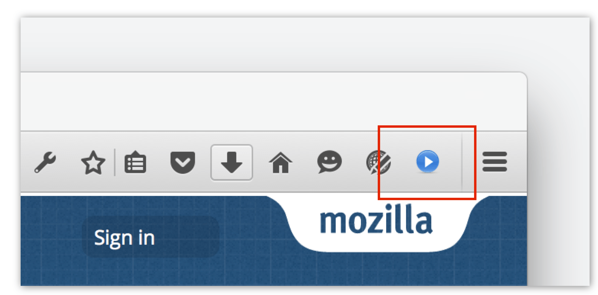

A browser action is a button you can add to the browser toolbar. Users can click the button to interact with your extension.

There are two ways to specify a browser action: with a popup, or without a popup.
If you don't specify a popup, then when the user clicks the button an event is dispatched to the extension, which you can listen for using browserAction.onClicked:
browser.browserAction.onClicked.addListener(handleClick);
If you do specify a popup, the click event is not dispatched: instead, the popup will be shown when the user clicks the button. The user will be able to interact with the popup and it will close automatically when the user clicks outside it.
Note that your extension can have only one browser action.
You define the browser action's properties - icon, title, popup - using the browser_action key in manifest.json:
"browser_action": {
"default_icon": {
"19": "button/geo-19.png",
"38": "button/geo-38.png"
},
"default_title": "Whereami?",
"default_popup": "popup/geo.html"
}
The only mandatory key is default_icon. You can change any of these properties programmatically using the browserAction API.
The webextensions-examples repo on GitHub contains several examples of extensions that use browser actions: